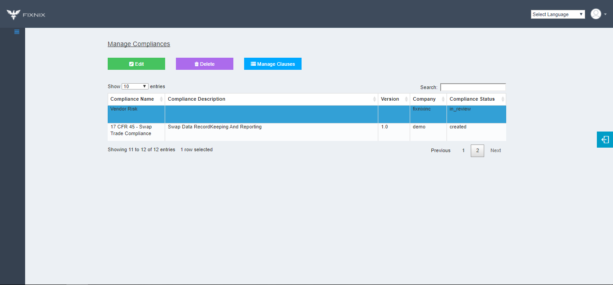

Company Admin
When you have “compliance author” privileges you will be able to add, modify compliance libraries
The import feature lets you use an template to load an regulation, standard into company’s compliance library quickly
The import will accept only csv files. The standard information fed into import template excel need to be saved as csv before selected for import.
After being imported it will show up with checklists of the library.
In the checklist, response format can be edited from yes/no to multiple objective, descriptive options using modify checklist.
The checklist also has feature to setup the weightage for control-wise.
Checklist uploaded can be verified before final review, approval.
If the checklist is of not right format and expectation, it can be deleted.
The versioning, description of the compliance library is maintained along with the company it’s associated with.
After the control checklist and entire compliance library is setup, it will be in review status before can be used for audits, other activities.

Library deletion can be done using the deletion feature.
If “compliance reviewer” privilege is available, it can be reviewed for sanity check.
If “GRC admin” privilege is available, it can be approved after going through the reviewers comments.
The fully approved library can be used for further activities in the platform products like Audit, Risk.